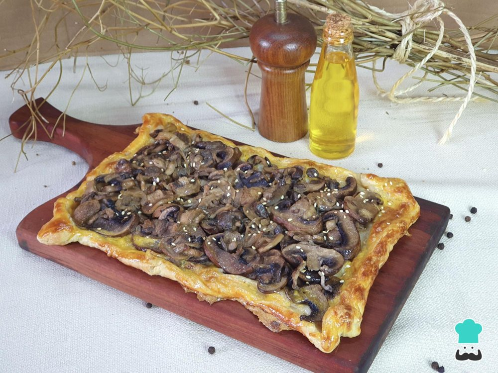

Tortas salgadas
Torta de cogumelos secos

Ingredientes
- ½ kg de Massa folhada
- 60 g de cogumelos secos
- 3 xícaras de água
- ¼ xícara de azeite de oliva
- 2 colheres (sopa) de manteiga
- 1 cebola picada
- 2 colheres (sopa) de salsa picada
- 1 colher (sopa) de extrato de tomate
- ½ xícara de vinho branco seco
- Sal e pimenta-do-reino a gosto
- ½ xícara de parmesão
- 4 ovos batidos
- 1 ovo batido (para pincelar)
Modo de preparo
- Prepare ¼ da receita de Massa folhada (veja a ficha) e congele.
- Ponha os cogumelos de molho na água em temperatura morna por 1 hora.
- Forre uma peneira com toalhas de papel, coe a água do molho dos cogumelos e reserve a água. Pique um pouco os cogumelos e reserve.
- Numa panela, aqueça o azeite e a manteiga e frite a cebola.
- Junte a salsa e o extrato de tomate. Cozinhe por cinco minutos. Junte os cogumelos e cozinhe por 5 minutos.
- Acrescente o vinho e cozinhe até evaporar. Junte a água do molho dos cogumelos, mexa e tampe a panela. Baixe o fogo e cozinhe até os cogumelos ficarem macios. Tempere a gosto, retire do fogo e deixe esfriar.
- Misture o queijo parmesão ao recheio. Congele.
Observação
Os pratos feitos com massa folhada não devem ser congelados já recheados, pois o recheio umedece a massa. Congelamento: embale a massa folhada em filme plástico, etiquete e congele; ponha o recheio num saco plástico que feche hermeticamente, ou embale em filme plástico, etiquete e congele. Descongelamento: descongele a massa e o recheio em temperatura ambiente; junte os ovos batidos ao recheio e misture. Montagem: preaqueça o forno em temperatura média (180 °C). Abra a massa folhada e forre o fundo de uma fôrma com 25 cm de diâmetro, untada. Pincele a borda da fôrma com o ovo batido. Corte uma tira de massa com 1,5 cm de largura e ponha sobre a parte pincelada, formando uma borda; aperte para firmar. Faça alguns furos na massa e leve ao forno até a massa ficar levemente dourada. Retire do forno e recheie. Leve de volta ao forno até o recheio firmar, sem deixar queimar as bordas da massa. Retire do forno, deixe esfriar por 5 minutos e sirva.